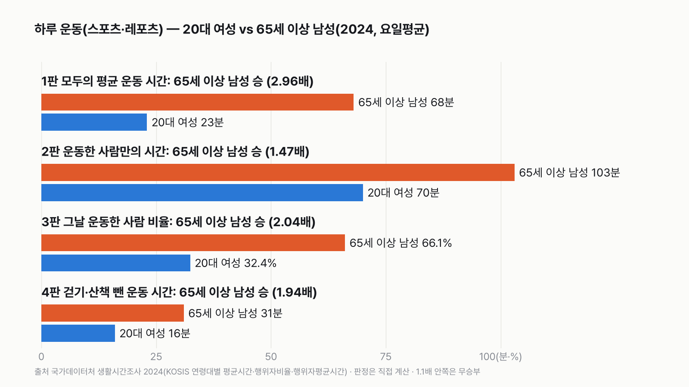
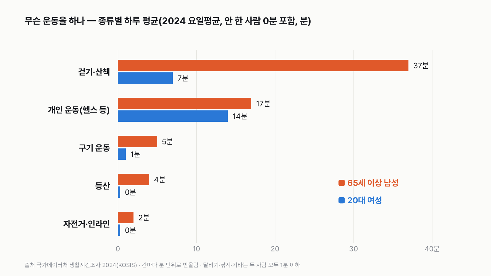
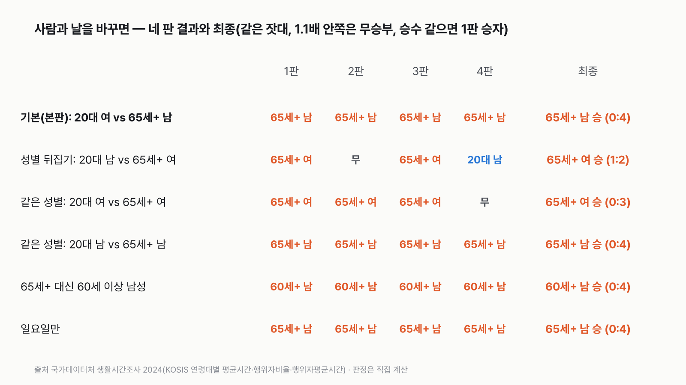
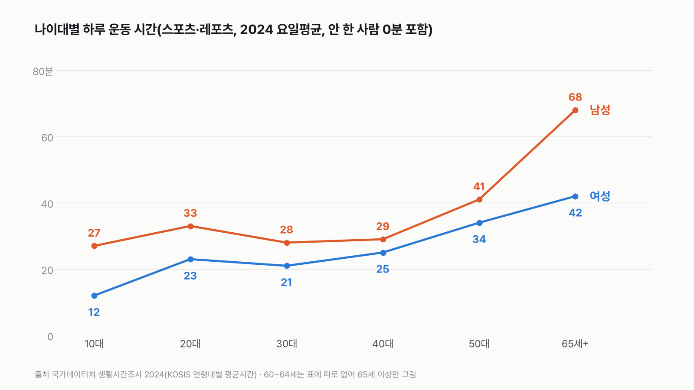

20대 여성 vs 65세 이상 남성 실험맨, 하루 운동은 누가 더 많이 할까
운동은 젊을 때 더 많이 할 것 같지만, 하루 일지로 보면 이야기가 달라질 수 있어요. 누가 더 많이 움직였을지 골라 주세요.

독자 투표
20대 여성 실험맨 vs 65세 이상 남성 실험맨, 네 판 승부로 하루 운동을 더 많이 하는 쪽은?
3줄 요약
- 이번엔 나이도 성별도 다른 실험맨 두 명이 나서요. 20대 여성과 65세 이상 남성이에요.
- 조사에서 '스포츠·레포츠'로 분류한 시간을 세요. 걷기·산책, 헬스 같은 개인 운동, 등산, 공놀이, 자전거가 다 들어가요.
- 모두의 평균 시간, 운동한 사람만의 시간, 운동한 사람 비율, 걷기를 뺀 시간으로 네 판을 겨뤄요.
조건과 규칙
- 왜 이 두 사람인가: 실험맨은 편마다 다른 평균 한국인으로 나서요. 이번엔 나이(20대와 65세 이상)와 성별을 둘 다 바꿨어요. 한쪽 성별에만 유리한 짝을 고른 게 아닌지 보려고, 성별을 뒤집은 짝(20대 남성 vs 65세 이상 여성)도 같은 잣대로 같이 놓았어요.
- 65세 이상: 2024년 표의 가장 높은 나이 구분이 65세 이상이에요(60~64세, 70~79세 칸은 따로 없어요). 65~69세부터 80세 이상까지 함께 들어 있어요.
- 세는 시간: 조사에서 '스포츠 및 레포츠'로 분류한 시간이에요. 걷기·산책, 달리기, 등산, 자전거, 개인 운동(헬스 등), 구기 운동, 낚시, 기타가 들어가요. 출퇴근이나 볼일 보러 걸은 시간은 '이동'이라 넣지 않았어요.
- 네 판(모두 2024년, 일주일 평균)
- 1판: 하루 운동 시간. 그날 운동을 안 한 사람(0분)까지 넣은 평균이에요.
- 2판: 그날 운동한 사람끼리, 운동한 시간 평균이에요.
- 3판: 그날 운동한 사람의 비율이에요.
- 4판: 1판에서 걷기·산책을 뺀 시간이에요. 걷기가 한쪽에 유리할 수 있어서 넣은 짝 판이에요.
- 판정: 판마다 큰 쪽이 작은 쪽의 1.1배 이상이면 승, 1.1배가 안 되면 무승부예요. 최종은 이긴 판 수로 정하고, 같으면 1판 승자가 이겨요.
결과 요약
4판 모두 65세 이상 남성 승 → 최종 65세 이상 남성 실험맨 승(4:0)
- 하루 운동 시간은 65세 이상 남성이 68분, 20대 여성이 23분이에요. 2.96배 차이예요.
- 운동한 사람끼리 봐도 103분 대 70분(1.47배), 그날 운동한 사람 비율도 66.1% 대 32.4%(2.04배)예요.
- 걷기·산책을 빼도 31분 대 16분(1.94배)으로 65세 이상 남성이 이겨요.
그래서? 걷기를 빼도, 운동한 사람끼리만 봐도 65세 이상 남성이 더 많이 움직여요. 20대 여성이 앞서는 곳은 '헬스를 한 날, 그날 헬스에 쓴 시간' 정도예요(64분 대 57분, 계산 뒤 더함).
독자 예상 vs 데이터 결과
20대 여성 실험맨 vs 65세 이상 남성 실험맨, 네 판 승부로 하루 운동을 더 많이 하는 쪽은?
데이터로 보면 65세 이상 남성. 하루 운동 시간은 65세 이상 남성 68분, 20대 여성 23분(2.96배)이에요. 운동한 사람끼리 103분 대 70분, 운동한 사람 비율 66.1% 대 32.4%, 걷기를 빼도 31분 대 16분이에요. 네 판 모두 65세 이상 남성이 이겨요.


하루 45분 차이를 1년으로 모으면 약 274시간이에요. 열하루가 넘는 시간이에요.
| 판 | 20대 여성 | 65세 이상 남성 | 배수 | 승자 |
|---|---|---|---|---|
| 1판 하루 운동 시간(모두의 평균) | 23분 | 68분 | 2.96배 | 65세 이상 남성 |
| 2판 운동한 사람만의 시간 | 70분 | 103분 | 1.47배 | 65세 이상 남성 |
| 3판 그날 운동한 사람 비율 | 32.4% | 66.1% | 2.04배 | 65세 이상 남성 |
| 4판 걷기·산책 뺀 운동 시간 | 16분 | 31분 | 1.94배 | 65세 이상 남성 |
| 최종 | 4:0 → 65세 이상 남성 실험맨 승 |
판마다 큰 쪽을 작은 쪽으로 나눴어요. 1.1배 이상이면 큰 쪽이 이기고, 안 되면 비겨요. 네 판 모두 1.4배를 넘어서 무승부가 끼어들 틈이 없었어요.
1판 하루 운동 시간: 65세 이상 남성 승(2.96배)
65세 이상 남성은 하루 평균 68분을 운동에 써요. 20대 여성은 23분이에요. 이 평균에는 그날 운동을 안 한 사람의 0분이 들어 있어요. 그래서 '얼마나 오래'와 '얼마나 많은 사람이'가 함께 섞인 숫자예요. 네 판 가운데 차이가 가장 커요. 이 판에도 산책이 들어 있어요. 65세 이상 남성의 68분 중 37분이 걷기·산책이에요.
3판 운동한 사람 비율: 65세 이상 남성 승(2.04배)
그날 10분 이상 운동한 사람이 65세 이상 남성은 66.1%, 20대 여성은 32.4%예요. 65세 이상 남성은 세 명 중 두 명이 하루에 한 번은 운동하고, 20대 여성은 세 명 중 한 명이에요. 1판 차이의 큰 부분이 여기서 와요. 이 판에도 산책이 들어 있어요. 그날 걷기·산책을 한 65세 이상 남성이 45.5%, 20대 여성이 12.0%예요. 그래서 1·2·3판은 걷기를 함께 담고 있어, 4:0이 보기만큼 서로 따로인 네 번의 승리는 아니에요.
2판 운동한 사람끼리: 65세 이상 남성 승(1.47배)
그날 운동한 사람만 보면 65세 이상 남성은 103분, 20대 여성은 70분 운동했어요. 차이가 1판보다 줄었지만 여전히 1.1배를 훌쩍 넘어요. 65세 이상 남성은 운동한 날엔 하루에 모두 합쳐 1시간 43분이에요. 이 판에도 걷기가 들어 있어요.
4판 걷기를 빼도: 65세 이상 남성 승(1.94배)
걷기·산책이 65세 이상 남성의 운동 68분 중 37분을 차지해요. 그래서 걷기를 빼면 차이가 줄 거라고 예상했어요. 빼 보니 31분 대 16분이에요. 줄긴 했지만 여전히 두 배 가까운 차이예요. 65세 이상 남성은 걷기 말고도 헬스 같은 개인 운동 17분, 공놀이 5분, 등산 4분, 자전거 2분을 해요.


헬스는 차이가 작아요
개인 운동(헬스 등)만 보면 20대 여성 14분, 65세 이상 남성 17분이에요. 1.21배라 규칙대로라면 65세 이상 남성 승이지만, 눈에 띄는 종목 중 차이가 가장 작아요. 그날 개인 운동을 한 사람끼리 보면 순서가 바뀌어서, 20대 여성이 그날 하루 합계 64분, 65세 이상 남성이 57분이에요(계산 뒤 더함). 1.12배라 1.1배 기준선에 가까운 아슬아슬한 차이예요. 20대 여성의 운동은 헬스에 모여 있고, 65세 이상 남성은 여러 종목에 퍼져 있어요.
성별을 뒤집어도 나이 든 쪽이 이겨요
20대 남성과 65세 이상 여성으로 짝을 바꾸면 결과가 더 팽팽해져요. 하루 운동 시간은 33분 대 42분, 운동한 사람 비율은 38.8% 대 52.0%로 65세 이상 여성이 이겨요. 운동한 사람끼리는 86분 대 82분으로 비기고, 걷기를 빼면 26분 대 17분으로 20대 남성이 이겨요. 2승 1무 1패로 65세 이상 여성 승이에요. 네 판 중 20대가 이긴 판은 이 '걷기 뺀 판' 하나뿐이에요. 여성끼리 견줘도 걷기를 빼면 20대 16분, 65세 이상 17분으로 비겨요(계산 뒤 더함). 걷기를 빼면 나이 차이가 거의 사라지는 짝도 있어요.


나이가 들수록 운동 시간이 늘어요
나이대별로 늘어놓으면 남성은 10대 27분, 20대 33분, 30대 28분, 40대 29분, 50대 41분, 65세 이상 68분이에요. 여성은 10대 12분, 20대 23분, 30대 21분, 40대 25분, 50대 34분, 65세 이상 42분이에요. 30·40대에 낮고, 50대부터 가파르게 늘어요. 모든 나이에서 남성이 여성보다 길어요.


날을 바꿔도 같아요
평일만 보면 22분 대 67분, 토요일 24분 대 68분, 일요일 24분 대 73분이에요. 어느 날이든 네 판 모두 65세 이상 남성이 이겨요. 65세 이상 대신 60세 이상 남성으로 바꿔도 63분으로 4:0이에요.
숫자를 다시 보며
저는 걷기를 넣으면 어르신이, 빼면 20대가 이길 거라고 어림했어요. 그래서 걷기를 뺀 판을 일부러 넣었어요. 결과는 걷기를 빼도 65세 이상 남성이 두 배 가까이 앞섰어요. 이 숫자는 하루에 쓴 시간만 보여 줘요. 누가 더 건강한지, 왜 이런 차이가 나는지는 이 표로 말할 수 없어요. 20대는 일과 학업에 하루의 큰 시간을 쓰는 시기라는 점도 함께 놓고 봐야 해요. 오늘 내가 운동한 시간은 몇 분이었을까요?
이 숫자는 어디서 왔나요
출처
어떻게 셌나요
- 자료: 국가데이터처 생활시간조사 2024. 10세 이상 가구원이 이틀 동안 10분 단위로 쓴 시간일지를 모아 낸 값이에요. 5년마다 하는 조사예요.
- 평균시간: 그날 그 행동을 안 한 사람(0분)까지 넣은 평균이에요(1판·4판).
- 행위자평균시간: 그날 그 행동을 한 사람만의 평균이에요(2판).
- 행위자비율: 그날 그 행동을 10분 이상 한 사람의 비율이에요(3판).
- 걷기 뺀 시간: 스포츠·레포츠 평균시간에서 걷기·산책 평균시간을 뺐어요. 평균시간끼리는 빼도 되는 값이라 이렇게 구했어요.
- 판정: 큰 쪽 ÷ 작은 쪽이 1.1배 이상이면 큰 쪽 승, 안 되면 무승부예요. 비율 판도 같은 규칙이에요.
| 항목 | 값 | 잰 것 / 가정 |
|---|---|---|
| 스포츠·레포츠 평균시간(20대 여성 · 65세 이상 남성) | 23분 · 68분 | 잰 것(시간일지) |
| 스포츠·레포츠 행위자평균시간 | 70분 · 103분 | 잰 것(시간일지) |
| 스포츠·레포츠 행위자비율 | 32.4% · 66.1% | 잰 것(시간일지) |
| 걷기·산책 평균시간 | 7분 · 37분 | 잰 것(시간일지) |
| 걷기 뺀 운동 시간 | 16분 · 31분 | 잰 것에서 계산 |
| 65세 이상 묶음 | 65~69세·80세 이상 포함 | 표의 구분 그대로 |
| 1년 = 하루 × 365 | 274시간 환산에만 | 가정 |
한계 7가지
이 데이터로 말할 수 없는 것
- 65세 이상에는 65~69세부터 80세 이상까지 함께 들어 있어요. 더 잘게 나눈 값은 2024년 표에 없어요. 60세 이상으로 넓혀도 4:0은 같아요.
- 시간일지는 10분 단위로 적어요. 10분이 안 되는 짧은 운동은 잡히지 않을 수 있어요.
- 표는 분 단위로 반올림돼 있어요. 4판(16분 대 31분)은 두 값을 빼서 구해서 반올림 오차가 커요. 그래도 가장 불리하게 잡은 범위(15~17분 대 30~32분)에서 1.76배 이상이라 판정은 그대로예요.
- 일지에는 한 번에 가장 주된 행동만 적혀요. 일하면서 몸을 쓴 시간은 '운동'에 들어가지 않아요.
- 이틀 일지를 모은 평균이라 한 사람의 평소 습관과는 달라요.
- 이 표는 운동의 세기는 알려 주지 않아요. 같은 30분이라도 산책과 달리기는 다른 운동이에요.
- 2024년 조사 하나만 썼어요. 5년 전 조사와 비교하지 않았어요.
다음 대결
대결 다 보기일 vs 가정
일 먼저 vs 가정 먼저, 더 많은 사람이 고른 쪽은?
A일 먼저vsB가정 먼저
투표하러 가기
대결투표했어요해도 그만 승결혼, 해야 한다 vs 해도 그만
결혼, '해야 한다' vs '해도 좋고 안 해도 좋다', 더 많은 사람이 고른 쪽은?
A해야 한다vsB해도 그만
투표하러 가기
대결투표했어요결과: 집 커피커피값, 집 vs 카페
커피값, 집 커피와 카페 커피 중 더 많이 오른 쪽은?
A집 커피vsB카페 커피
투표하러 가기
대결투표했어요영화관 승영화관 vs 집
영화관 vs 집에서 보기(온라인 콘텐츠), 값이 더 많이 오른 쪽은?
A영화관vsB집에서 보기
투표하러 가기
대결투표했어요햄버거 승햄버거 vs 피자
햄버거 vs 피자, 값이 더 많이 오른 쪽은?
A햄버거vsB피자
투표하러 가기
대결투표했어요목욕탕 승목욕탕 vs 찜질방
목욕탕 vs 찜질방, 값이 더 많이 오른 쪽은?
A목욕탕vsB찜질방
투표하러 가기
대결투표했어요택시 승택시 vs 시내버스
택시 vs 시내버스, 요금이 더 많이 오른 쪽은?
A택시vsB시내버스
투표하러 가기
대결투표했어요식당 라면 승사서 끓인 라면 vs 식당 라면
같은 라면, 사서 끓인 것과 식당 라면 중 값이 더 오른 쪽은?
A사서 끓인 라면vsB식당 라면
투표하러 가기
새 글 나오면 받아 보기
피드 리더 앱에 이 사이트 주소를 한 번 넣어 두면, 새 글이 올라올 때 앱에 떠요. 가입이나 메일 주소는 필요 없어요.
받는 법 보기
- 피드 리더 앱을 하나 골라요. 새 글을 모아 보여 주는 앱이에요. 예를 들면 Feedly나 Inoreader가 있어요. 둘 다 무료고 웹·휴대폰에서 써요.
- 앱에서 '구독 추가'(+)를 누르고 아래 주소를 붙여 넣어요.
- 끝이에요. 새 글이 올라오면 앱 목록에 떠요.
https://protofu.github.io/opendata-insight/feed.xmlFeedly를 쓴다면 여기를 눌러 바로 추가할 수도 있어요.